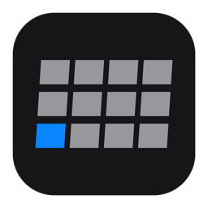
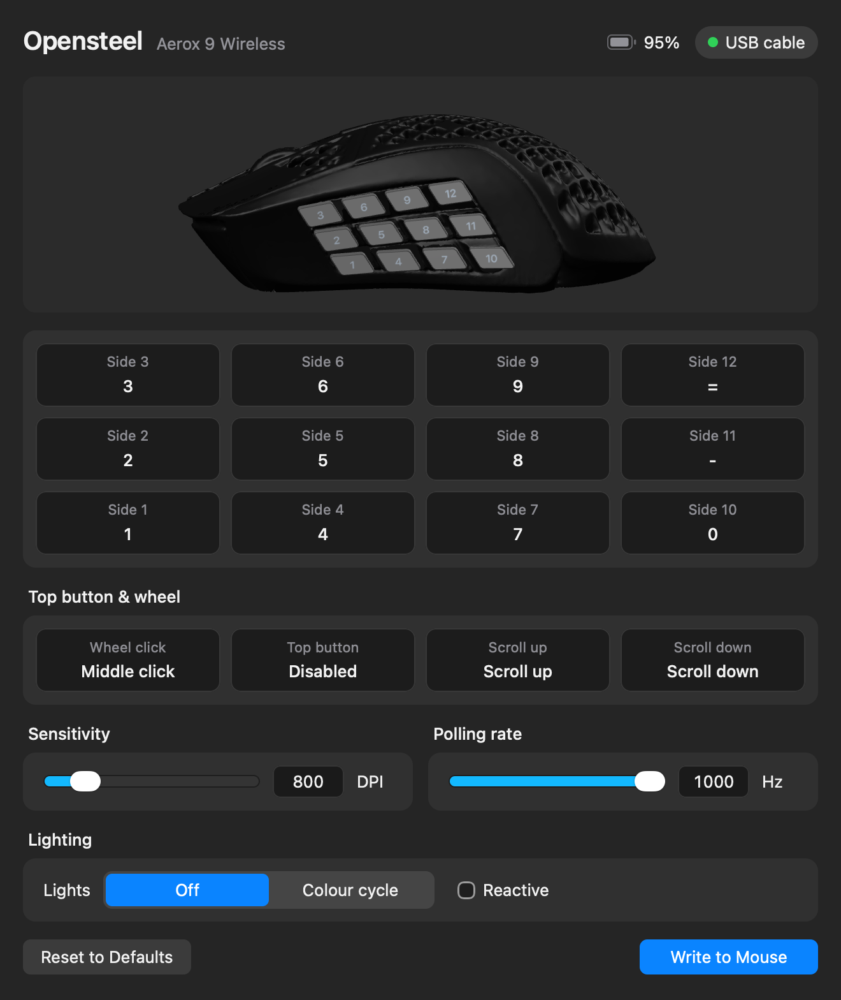

Opensteel
A simple tool to remap your Steelseries Aerox 9 mouse

Looking up the latest release…
What it does
- Remap every button.
- Settings are saved to the mouse, so they keep working with Opensteel closed.
- Works over USB, the 2.4 GHz dongle and Bluetooth.
First launch
- macOS: allow Input Monitoring when asked, so it can show which button you pressed.
- Linux: the .deb and .rpm install a udev rule so the app can reach the mouse. For the AppImage, add it once:
sudo curl -Lo /etc/udev/rules.d/70-opensteel.rules https://raw.githubusercontent.com/Jetsmoke/Opensteel/main/desktop/src-tauri/linux/70-opensteel.rules sudo udevadm control --reload-rules && sudo udevadm trigger --subsystem-match=hidraw